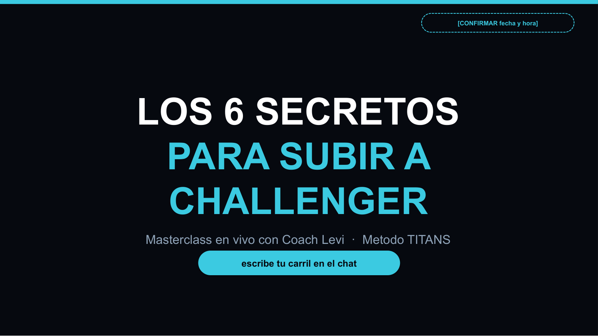

Tienes audiencia (14K IG, 9.860 subs en YT) y un backend con fila de espera (4 cupos, 200+ aplicantes). Lo que no tienes es el mecanismo one-to-many que los conecte a escala. Aqui esta, completo y en tu marca: un sistema de webinar mensual listo para enchufar.
Auditoria completa del 17 de julio de 2026: tu sitio, tus ~220 ads en Meta Ad Library, tu canal de YouTube y tu funnel de GoHighLevel.
Ads a follows, DMs con keyword, VSL a llamada. Todo converge en conversaciones 1 a 1. Ni un solo evento en vivo en 220 ads: el multiplicador no existe todavia.
El ad de follows corre desde septiembre 2025. Cada peso construye una audiencia que vive en Meta, no una lista tuya con email y WhatsApp.
565 videos y tu mejor pieza con 80K vistas empujan directo a "agenda una llamada": friccion maxima para trafico frio. Falta el paso intermedio.
Pixel de Meta instalado DOS veces (tus CPAs reportan la mitad del costo real) y paginas de prueba indexables en el sitemap. Una hora de arreglos.
La buena noticia: tu escasez es real (4 cupos, 200+ aplicantes), tu proof es real (+7.000 alumnos, 41 Challengers) y tu avatar paga. Solo falta el evento que lo junte todo. Lo construimos entero.
Abre cada seccion. Nada de esto es un mockup: son los deliverables reales, listos para usar.
Masterclass de 75-90 minutos en tu marca (navy + cyan + gold), mapeada 1:1 con el guion hablado. Cierre por aplicacion a TU flujo real de llamadas: titanscoaching.cl/challenger. Los numeros y testimonios son los tuyos, citados con fuente.

Funnel completo en tu marca. El registro pide solo 3 campos (convierte mas); el WhatsApp se captura en el paso 5 de la confirmacion, que es donde no cuesta conversion. El replay expira de verdad a las 48 horas.
Escritas en tu voz (tuteo, directo, jerga nativa del nicho). Objetivo: show-rate 35%+ contra el 20-25% tipico de webinars frios.
Rediseño completo de tu pagina de calificacion: VSL arriba, tus numeros como banda de credibilidad, los 3 pilares del metodo, testimonios con fuente, oferta clara del Acompañamiento y FAQ que mata objeciones. Con tu paleta y lista para GoHighLevel.
Recorremos el sistema, confirmas fecha, tu historia de origen y los terminos de tu garantia.
Paginas y secuencias a tu GoHighLevel, pixel corregido, tracking por etapa.
Tu evergreen redirigido al registro la semana pre-evento + CTA fijo en tu canal de YouTube.
Acompañamos el evento, medimos cada etapa y ajustamos para el ciclo 2.
20 minutos: recorremos el paquete, resolvemos las 4 confirmaciones pendientes y te decimos exactamente que haria falta para tu primer vivo. Si no seguimos, el paquete es tuyo igual.
Agendar una llamada de 20 minutos